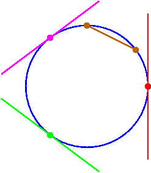
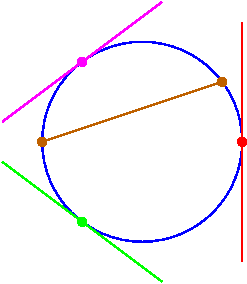

A Schematic
19
It is instructive to view the relative positions on the
rational normal curve
of the three tangent lines in
red
,
magenta
, and
green
, and the
secant line
.


Solutions always real
Solutions
not
always real